منصتان تحصلان على 82% من الميزانية.
TikTok يحقق أفضل وصول لكل ريال لكن جمهوره المحلي محدود، فيبلغ سقفه عند 1,749 ريالًا. ويأخذ YouTube الباقي، بينما تبقى المنصات الثلاث الأخرى عند الحد الأدنى 300 ريال.
مقهى شاي في الهفوف بدأ يفقد عملاءه. حوّلنا ميزانيته التسويقية الشهرية البالغة 5,000 ريال إلى مسألة تحسين بين خمس منصات تواصل اجتماعي.

خسرت معظم منتجات المقهى العشرين من أرباحها مقارنة بالعام السابق بينما بقيت التكاليف التشغيلية ثابتة، فالمشكلة قلة العملاء لا ارتفاع التكاليف. خطة المالك لإنتاج المخبوزات داخليًا تحسّن الهامش لكنها لا تجلب عملاء.
TikTok يحقق أفضل وصول لكل ريال لكن جمهوره المحلي محدود، فيبلغ سقفه عند 1,749 ريالًا. ويأخذ YouTube الباقي، بينما تبقى المنصات الثلاث الأخرى عند الحد الأدنى 300 ريال.
كل ريال إضافي يصل إلى 0.23 شخص إضافي حتى نحو 6,134 ريالًا، حين يبلغ YouTube سقفه أيضًا. وفوق 7,823 ريالًا لا يبقى جمهور محلي إضافي.
فرض 300 ريال على كل منصة يكلّف وصولًا: كل ريال يبقى في X أو Instagram يصل إلى نحو 0.1 شخص أقل مما لو صُرف على YouTube.
حدود الدراسة: المعاملات مبنية على أعداد مستخدمين محليين تقديرية وأسعار إعلانات منشورة تتغير حسب الموسم. والنموذج يعظّم الوصول لا الربح.